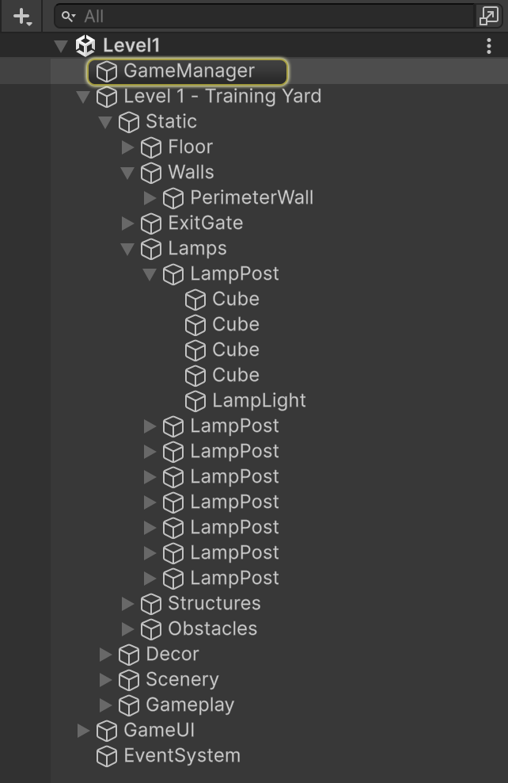
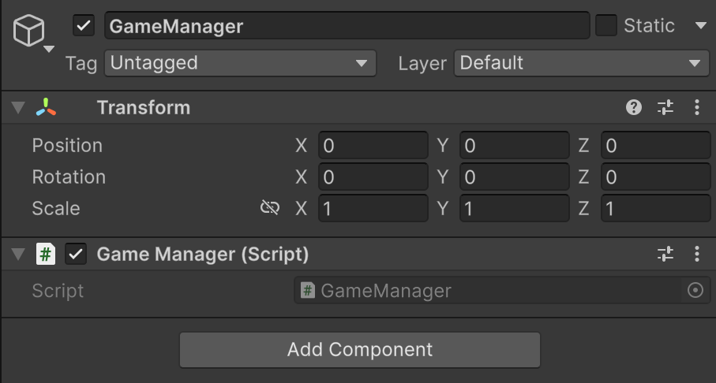
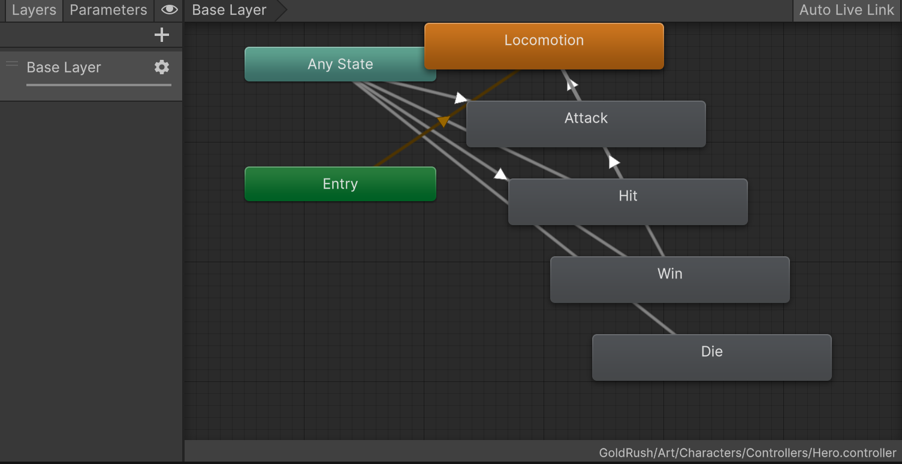
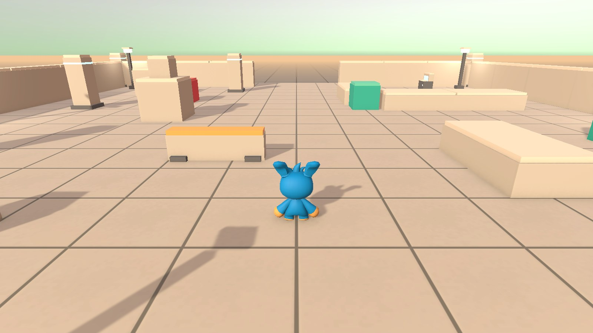
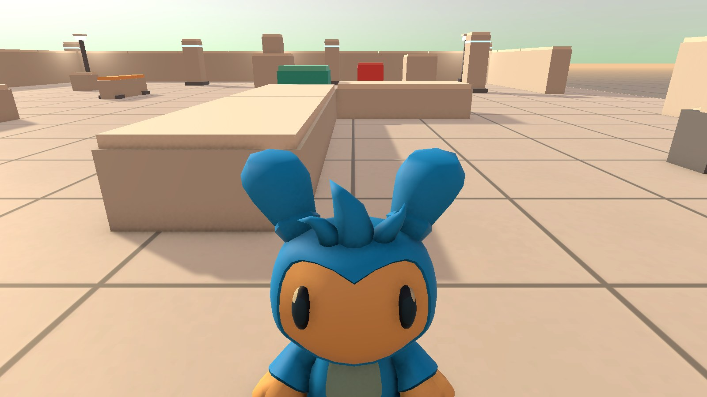

GOLD RUSH · Phase 4
Player and camera
The hero comes into Level1. You import the phase package, check where the hero starts and how his model and animations are set up, and then run around the yard with a third-person camera. The Player and the camera are not saved in the scene: the GameManager makes them in code when you press Play.
1What you get
The package has the whole Level1 from Phase 3, plus the parts for the hero:
| New or explained in this phase | What it does |
|---|---|
GameManager (object in the scene) | The boss of the level. At Play it makes the Player and the camera. |
Gameplay/PlayerSpawn (marker) | Where the hero starts and which way he looks. |
PlayerMotor.cs | Moves the hero: walk, sprint, stamina, animations. |
ThirdPersonCamera.cs | The camera behind the hero. The mouse turns it. It slides closer at walls. |
Art/Characters/Controllers/Hero.controller | The hero's Animator Controller: idle, walk, run, win, hit, die. |
| The HUD | Made by code for now (coin counter, hearts, timer, day/night and pause buttons). The HUD in the scene comes in Phase 9. |
Package: GoldRush_Export/Packages/GoldRush_Phase04_Player.unitypackage. Like every phase package, it already has all the final scripts. In this phase you only look at the player part.
2Import the package
- Make a new Unity 6 project with the Universal 3D template, and set it up like in Phase 0 (packages AI Navigation + Input System, Active Input Handling = Both). Or use your old project and first delete the folder
Assets/GoldRush. - Assets → Import Package → Custom Package… → pick
GoldRush_Phase04_Player.unitypackage→ Import (keep everything ticked). - Wait until Unity has compiled. The Console must have no red errors.
- File → Build Profiles → Scene List: drag in
Scenes/MainMenufirst, thenScenes/Level1. MainMenu must be number 0. - Open
Assets/GoldRush/Scenes/Level1.unity.
3Check
Look at each thing below. You do not change anything here.
Check 1 · No Player in the Hierarchy
Look at the top level of the Hierarchy: GameManager, Level 1 - Training Yard and EventSystem. There is no Player and no Main Camera. (The overview camera and the Sun of Phase 3 are gone too: the game makes its own camera and sun light at Play.) That is right: they are made in code at Play.

Check 2 · The GameManager
Select GameManager. It has one component, Game Manager, with no fields. It finds everything by itself when the level starts.

Check 3 · The PlayerSpawn marker
Select Level 1 - Training Yard/Gameplay/PlayerSpawn. Check: Position 0, 0, -9, Rotation 0, 0, 0, component Player Spawn. In the Scene view it draws a blue ball and a blue arrow. The arrow points north, to the gate: the hero and the camera look that way at the start.
Check 4 · The hero model
Click Assets/GoldRush/Art/Characters/Hero/Hero.fbx. On the Rig tab: Animation Type = Generic, Avatar Definition = Create From This Model. On the Animation tab you see the clips: Idle, Walk, Run, Wave loop; Punch, HitReact, Death play once.

Check 5 · The Hero Animator Controller
Double-click Assets/GoldRush/Art/Characters/Controllers/Hero.controller. The Animator window opens.
- Parameters:
Speed(Float) and the triggersAttack,Hit,Win,Die. Locomotionis orange (the default state). It is a blend tree onSpeed:Idleat 0,Walkat 0.5,Runat 1.- Any State has arrows to
Attack,Hit,WinandDie(each with its trigger, no exit time, 0.1 s). AttackandHitgo back toLocomotionat exit time 0.85.Wingoes back at exit time 3 (he waves 3 times).Diehas no way back.

Check 6 · The hero in GoldRushAssets
Select Assets/GoldRush/Resources/GoldRushAssets and open Hero. The code builds the hero from these values.
| Hero field | Value | Why |
|---|---|---|
| Model / Controller | Hero (fbx) / Hero (controller) | The look and the animations. |
| Height | 1.35 | The model is scaled to 1.35 m. The capsule gets the same height. |
| Hat Scale / Hat Height | 1.9 / 0.74 | For the shop hats. |
| Walk Speed / Run Speed | 0.587 / 0.836 | How fast the clips move the feet, so the feet do not slide. |

Check 7 · Play mode: the Player
Press ▶ Play and look at the Hierarchy while the game runs. Now there is a Player with a child Model. Select Player:
- Layer = Ignore Raycast (camera rays fly through the hero).
- Character Controller: Height
1.35, Radius0.36, Center0, 0.695, 0, Skin Width0.05, Step Offset0.35, Slope Limit50. - Player Motor: Walk Speed
5, Sprint Speed8.2, Acceleration20, Turn Speed560.

Check 8 · Play mode: the Main Camera
Still in Play mode, select Main Camera. It has Camera (Field of View 55, Near 0.1, Far 400), Audio Listener and Third Person Camera (Target = Player, Distance 6.2, Height 1.15, Min/Max Pitch 4 / 62, Mouse Sensitivity 2.4). Stop Play: both objects are gone again.

4How it works
When the level starts, GameManager.Build() makes the hero and the camera (Scripts/Gameplay/GameManager.cs):
// a little shorter than the real code
Player = FindAnyObjectByType<PlayerMotor>();
if (Player) { Player.Teleport(layout.spawn, layout.spawnYaw); Player.SetupPlaced(); }
else Player = PlayerMotor.Create(layout.spawn, layout.spawnYaw);
Cam = FindAnyObjectByType<ThirdPersonCamera>();
if (Cam) Cam.Init(Player.transform, layout.spawnYaw);
else Cam = ThirdPersonCamera.Create(Player.transform, layout.spawnYaw);
Player.cam = Cam;layout.spawnandlayout.spawnYaware the position and the Y rotation ofPlayerSpawn.- Is there a Player in the scene already? Then it is used. If not,
PlayerMotor.Create()makes one: a new GameObject, a CharacterController, PlayerMotor, and the model from GoldRushAssets → Hero. - The same for the camera:
ThirdPersonCamera.Create()makes aMain Camerawith the tag MainCamera.
Every frame, PlayerMotor.Update() moves the hero (Scripts/Gameplay/PlayerMotor.cs):
Vector2 input = canMove ? ReadInput() : Vector2.zero; // W A S D or arrows
float yaw = cam ? cam.Yaw : 0f;
Vector3 dir = Quaternion.Euler(0, yaw, 0) * new Vector3(input.x, 0, input.y);
float speed = (Sprinting ? sprintSpeed : walkSpeed) * mul;
velocity = Vector3.MoveTowards(velocity, targetVel, acceleration * dt);
cc.Move((velocity + knock + Vector3.up * vy) * dt);
anim.SetFloat(AnimParams.Speed, blend, 0.15f, dt); // 0 idle, 0.5 walk, 1 runcanMoveis true only while the GameManager state is Playing. During the intro countdown and the pause, the hero stands still.- The keys are turned by the camera angle (
yaw), so W always runs "into the screen". - Shift sprints (
8.2instead of5m/s) and uses stamina. When stamina is empty, the hero walks until it is back above 0.35. cc.Move()moves the CharacterController: a capsule that stops at walls, without real physics. Gravity is thevypart.SetFloat("Speed", …)feeds the blend tree you saw in Check 5.- The camera works in
LateUpdate(), after the hero has moved. Rays from the hero to the camera find walls; then the camera comes closer (never nearer than 1.4 m).
5▶ Press Play
- Open
Scenes/MainMenu, press ▶ Play and click PLAY. (To test faster, press Play in Level1.) - Wait for the countdown (3, 2, 1, GO!). Click once in the Game view: the cursor hides.
| Key / mouse | Does |
|---|---|
| W A S D or arrows | move (relative to the camera) |
| Shift | sprint |
| Move the mouse | look around |
| Q / E, mouse wheel | turn the camera, zoom (4 to 11 m) |
| Esc or P | pause (the cursor comes back) |
You should see:
- The screen fades in and the camera swoops down from high up to behind the hero.
- The hero stands on the floor and plays Idle. W walks, Shift runs. After about 3 s of sprinting he gets tired.
- He stops at walls and blocks. Turn the camera into a wall: it slides closer, you never look through the wall.
- The HUD shows the coin counter (
0 / 0: no coins yet), hearts, the timer, the day/night and pause buttons. A stamina bar shows while you sprint. - No red errors. One yellow warning "This level has no CoinSpot objects" is normal: the coins come in Phase 5.

6Try it
Small changes, so you see what the numbers do. Change them back afterwards.
- A faster hero. Open
Scripts/Gameplay/PlayerMotor.cs. Changepublic float walkSpeed = 5f;to8f. Save, press Play: he walks as fast as he sprinted before. (The Player is made in code, so the script value counts. You can also change Walk Speed onPlayerwhile playing, but it resets when you stop.) - A camera further away. In
Scripts/Gameplay/ThirdPersonCamera.cs, changepublic float distance = 6.2f;to10f. You see more of the yard. - A giant hero. In
GoldRushAssets → Hero, set Height to2.5. Press Play: the hero and his capsule are almost twice as big. Set it back to1.35. - Another start. Set the Rotation Y of
PlayerSpawnto180. The hero starts looking south. Set it back to0.
7Common problems
| Problem | Fix |
|---|---|
| I cannot find the Player in the Hierarchy. | Normal. It exists only in Play mode. Press Play and look again. |
| PLAY in the menu does nothing: "Scene 'Level1' couldn't be loaded". | Add MainMenu and Level1 to File → Build Profiles → Scene List (step 2). |
| "You are trying to read Input using the UnityEngine.Input class…" | Edit → Project Settings → Player → Active Input Handling = Both. |
| "GoldRushAssets missing", or the hero is invisible. | The asset must be at Assets/GoldRush/Resources/GoldRushAssets with Hero Model and Controller filled. Import the package again. |
| Keys do nothing. | Wait for GO!, then click inside the Game view. |
| Everything is pink. | The project is not URP. Make it with the Universal 3D template (Phase 0). |
More fixes are on the Troubleshooting page. New words are in the Glossary.
Checkpoint package: GoldRush_Phase04_Player.unitypackage